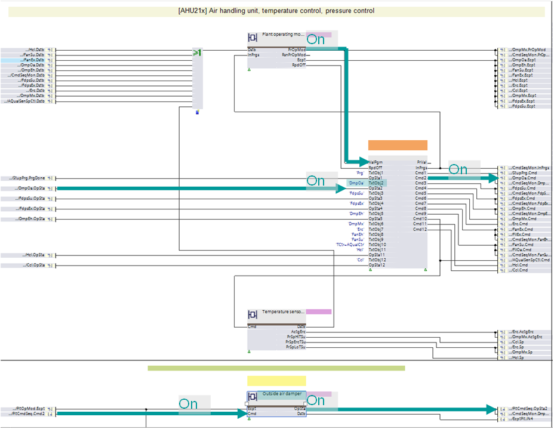
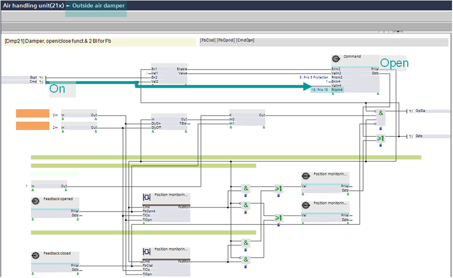
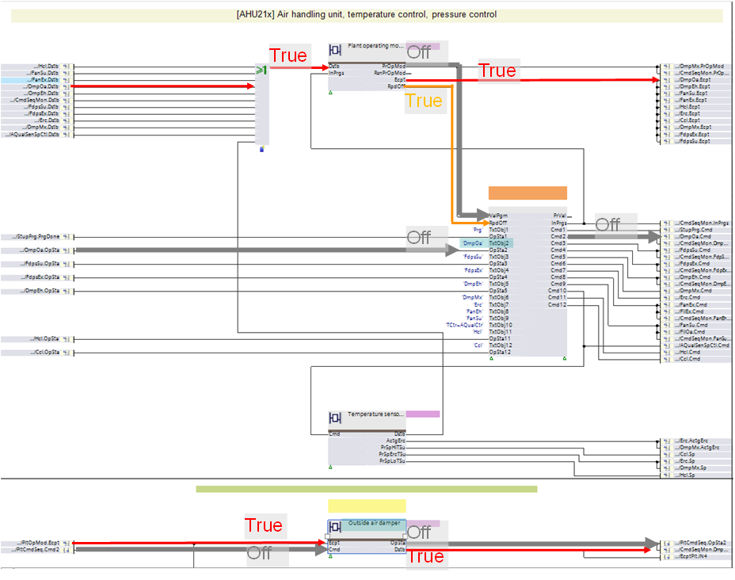
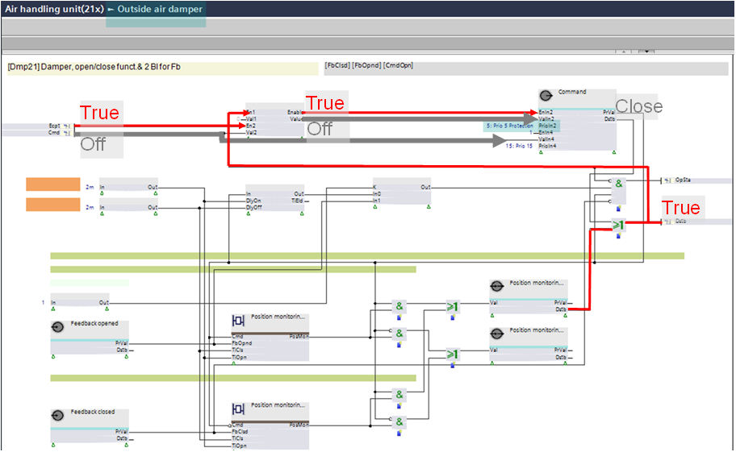
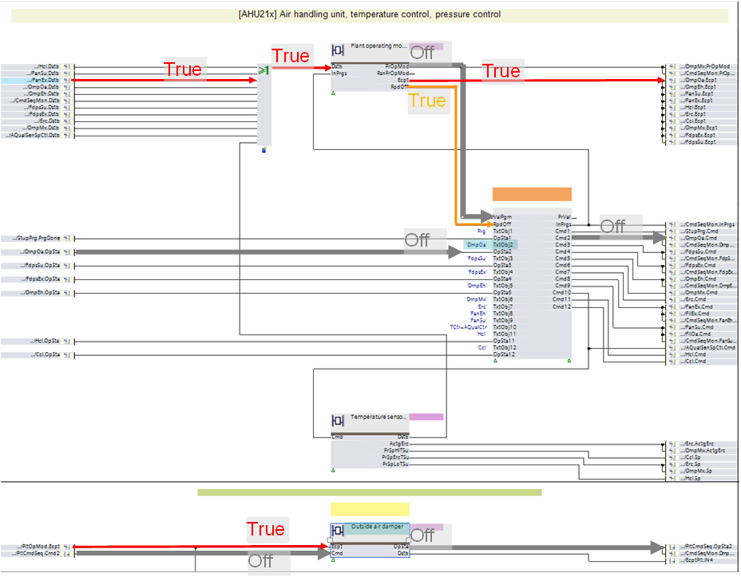
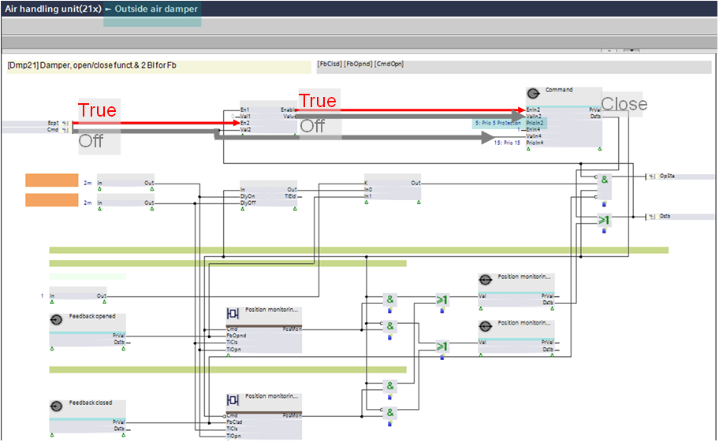
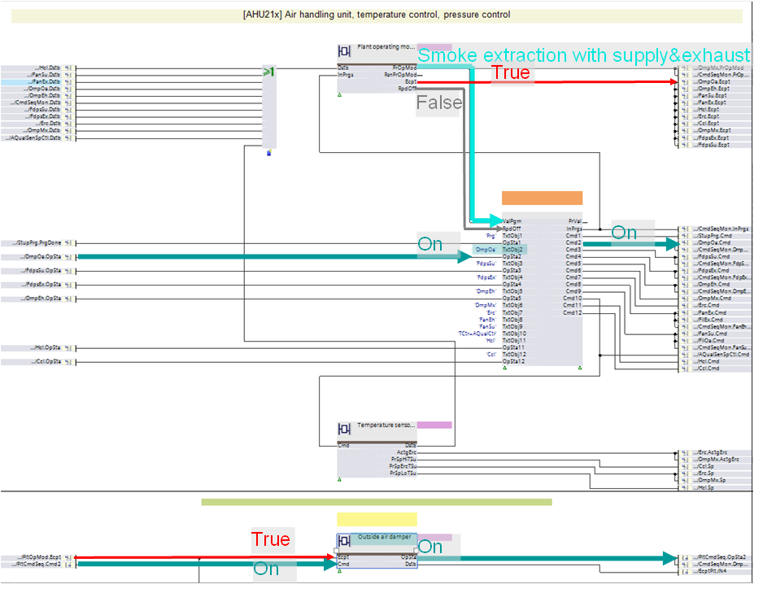
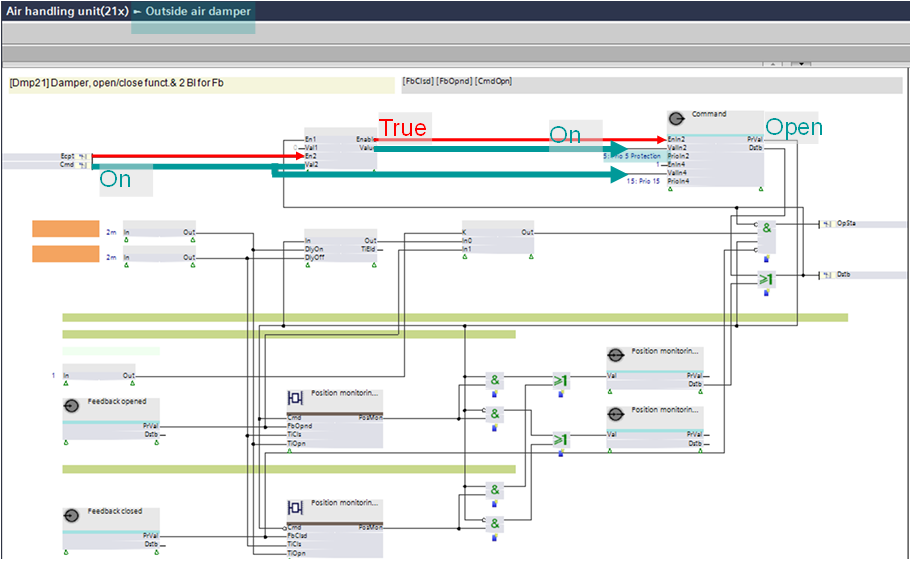

嵌套植物是如何组织的？
工厂始终以下列模式之一运行：
- Normal mode with plant operating mode "Off" or "On"
- Exception mode with plant operating mode "Off" or "On"
Normal mode
下图显示了工厂级“正常”模式的信号流：

下图显示了嵌套图表“外部空气风门”中“正常”模式的信号流：

Exception mode
下图显示了当异常原因是由“外部空气挡板”引起时，工厂级“异常”模式的信号流：

下图显示了嵌套图表“外部空气风门”中“异常”模式的信号流，当异常原因是在图表内部引起时：

下图显示了当异常原因是由另一个组件（不是“外部空气风门”）引起时，工厂级“异常”模式的信号流：

下图显示了嵌套图表“外部空气风门”中“异常”模式的信号流，当异常原因是由另一个组件（不是“外部空气风门”）引起时：

Special exception mode "Smoke extraction" for air handling units
下图显示了“排烟”情况下工厂级“异常”模式的信号流：

下图显示了“排烟”情况下嵌套图表“外部空气风门”中“异常”模式的信号流：
